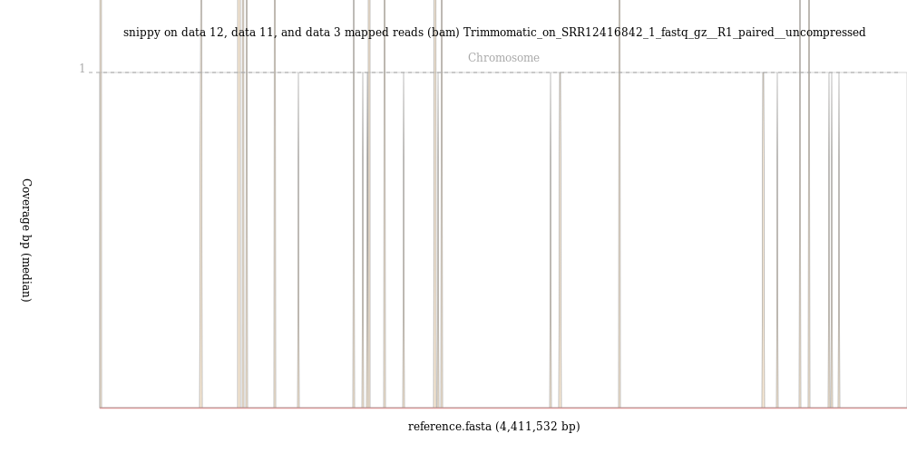

M. tuberculosis Variant Analysis
 Peter van Heusden
Peter van Heusden Simon Gladman
Simon Gladman Thoba Lose
Thoba LoseOverview
Questions:Objectives:
How do we detect differences between a set of reads from M. tuberculosis (Mtb) and the Mtb reference genome
Requirements:
How should we filter those variants
How can we predict drug resistance from those variants
How do we annotate those variants
- Introduction to Galaxy Analyses
- Sequence analysis
- Quality Control: slides slides - tutorial hands-on
- Mapping: slides slides - tutorial hands-on
Time estimation: 2 hoursLevel: Intermediate IntermediateSupporting Materials:Last modification: May 18, 2021
 Questions:
Questions:
Introduction
Tuberculosis (TB) is an infectious disease caused by the bacterium Mycobacterium tuberculosis. According to the WHO, in 2018 there were 10.0 million new cases of TB worldwide and 1.4 million deaths due to the disease, making TB the world’s most deadly infectious disease. The publication of the genome of M. tuberculosis H37Rv in 1998 gave researchers a powerful new tool in understanding this pathogen. This genome has been revised since then, with the latest version being available as RefSeq entry NC_000962.3. The genome comprises a single circular chromosome of some 4.4 megabases. The H37Rv strain that the genome was sequenced from is a long-preserved laboratory strain, originally isolated from a patient in 1905 and named as H37Rv in 1935. It is notably different in some genomic regions from some modern clinical strains but remains the standard reference sequence for M. tuberculosis (Mtb). In a larger context M. tuberculosis is a prominent member of the Mycobacterium Tuberculosis Complex (MTBC).
This group of related species comprises of the 8 lineages of human-infecting M. tuberculosis as well as predominantly animal-infecting species such as M. bovis and M. pinnipedii. Two other close relatives of Mtb, M. leprae and M. lepromatosis circulate between humans, causing the disease leprosy. Finally amongst the Mycobacteria there are several other species that live in the environment and can cause human disease. These are the Nontuberculous Mycobacteria.
Variation in the genome of M. tuberculosis (Mtb) is associated with changes in phenotype, for example drug resistance and virulence. It is also useful for outbreak investigation as the single nucleotide polymorphisms (SNPs) in a sample can be used to build a phylogeny.
This tutorial will focus on identifying genomic variation in Mtb and using that to explore drug resistance and other aspects of the bacteria.
Get your data
The data for today is a sample of M. tuberculosis collected from a southern African patient. In addition to the bacterial sequence sample we will work with a Genbank format version of the genome of the inferred most recent common ancestor of the M. tuberculosis complex which is combined with the annotation of the H37Rv reference sequence. This ancestral genome only differs from the H37Rv version 3 genome (NC_000962.3) by the insertion of SNPs to try and model the ancestor of all lineages of Mtb.
hands_on Hands-on: Get the data
- Import Tool: upload1 the following files from Zenodo or from the shared data library
https://zenodo.org/record/3960260/files/004-2_1.fastq.gz https://zenodo.org/record/3960260/files/004-2_2.fastq.gz https://zenodo.org/record/3960260/files/Mycobacterium_tuberculosis_ancestral_reference.gbk https://zenodo.org/record/3960260/files/MTB_ancestor_reference.fasta https://zenodo.org/record/3960260/files/Mycobacterium_tuberculosis_h37rv.ASM19595v2.45.chromosome.Chromosome.gff3Tip: Importing via links
- Copy the link location
Open the Galaxy Upload Manager (galaxy-upload on the top-right of the tool panel)
- Select Paste/Fetch Data
Paste the link into the text field
Press Start
Close the window
- By default, Galaxy uses the URL as the name, so rename the files with a more useful name.
Tip: Importing data from a data library
As an alternative to uploading the data from a URL or your computer, the files may also have been made available from a shared data library:
- Go into Shared data (top panel) then Data libraries
- Navigate to the correct folder as indicated by your instructor
- Select the desired files
- Click on the To History button near the top and select as Datasets from the dropdown menu
- In the pop-up window, select the history you want to import the files to (or create a new one)
- Click on Import
Quality control
This step serves the purpose of identifying possible issues with the raw sequenced reads input data before embarking on any “real” analysis steps.
Some of the typical problems with NGS data can be mitigated by preprocessing affected sequencing reads before trying to map them to the reference genome. Detecting some other, more severe problems early on may at least save you a lot of time spent on analyzing low-quality data that is not worth the effort.
Here, we will perform a standard quality check on our input data and only point out a few interesting aspects about that data. For a more thorough explanation of NGS data quality control, you may want to have a look at the dedicated tutorial on “Quality control”.
hands_on Hands-on: Quality control of the input datasets
Execute FastQC Tool: toolshed.g2.bx.psu.edu/repos/devteam/fastqc/fastqc/0.72+galaxy1 tool on both of your fastq datasets
- param-files “Short read data from your current history”: select both FASTQ datasets.
Tip: Select multiple datasets
- Click on param-files Multiple datasets
- Select several files by keeping the Ctrl (orCOMMAND) key pressed and clicking on the files of interest
The FastQC tool input form looks like this. You only need to pay attention to the top part where Short read data from your current history is selected. Leave all the other parameters at their default values and click Execute.
When you start this job, four new datasets (one with the calculated raw data, another one with an html report of the findings for each input dataset) will get added to your history.

While one could examine the quality control report for each set of reads (forward and reverse) independently but it is quite useful to example them side by side using the MultiQC tool.
hands_on Hands-on: Combining QC results
- Use MultiQC Tool: toolshed.g2.bx.psu.edu/repos/iuc/multiqc/multiqc/1.8+galaxy0 tool to aggregate the raw FastQC data of all input datasets into one report
- In “Results”
- “Which tool was used generate logs?”:
FastQC- In “FastQC output”
- “Type of FastQC output?”:
Raw data- param-files “FastQC output”: both RawData outputs of FastQC tool)
Using the galaxy-eye button, inspect the Webpage output produced by the tool
question Questions
- Based on the report, do you think preprocessing of the reads (trimming and/or filtering) will be necessary before mapping?
solution Solution
- Sequence quality is quite good overall. If anything you might consider trimming the 3’ ends of reads (base qualities decline slightly towards the 3’ ends) or to filter out the small fraction of reads with a mean base quality < 5. We will run Trimmomatic tool on the fastq datasets in the next step
As these reads look like they need a bit of trimming, we can turn to the Trimmomatic tool to clean up our data.
hands_on Hands-on: Quality trimming
- Use Trimmomatic Tool: toolshed.g2.bx.psu.edu/repos/pjbriggs/trimmomatic/trimmomatic/0.36.5 tool to clean up the reads and remove the poor quality sections.
- “Single-end or paired-end reads?”:
Paired End (two separate input files)- param-files “Input FASTQ file (R1/first of pair)”:
004-2_1.fastq.gz- param-files “Input FASTQ file (R2/second of pair)”:
004-2_2.fastq.gz- Select Trimmomatic operation to perform
- Keep the default value of Sliding window trimming and adjust the average quality required to 30
- “+Insert Trimmomatic Operation”
- “Select Trimmomatic operation to perform”:
Drop reads below a specified length (MINLEN)- “Minimum length of reads to be kept”:
20Inspect the output produced by Trimmomatic
question Questions
- Why are there 4 output read files instead of 2?
solution Solution
- There are 4 output files: Forwards paired and single reads and reverse paired and single reads. The single reads come about when one read in a pair of reads has failed the quality checks and so is deleted. The other half of the pair may still be good and so it is put into the single reads file for the appropriate direction. While un-paired reads might sometimes be useful, paired reads are more useful because they both the sequence and the gap between reads (“insert size”) can be used for further analysis. In a typical analysis, only paired reads are used.
Note: We would normally examine our trimmed reads with FastQC and MultiQC again to see if the quality trimming has been successful, but in this tutorial we will move straight on to save time.
Look for contamination with Kraken2 (optional)
We should also look for contamination in our reads. Sometimes, other sources of DNA accidentally or inadvertantly get mixed in with our sample. Any reads from non-sample sources will confound our snp analysis. Kraken 2 is an effective way of looking and which species is represented in our reads and so we can easily spot possible contamination of our sample. Unfortunately kraken2 uses a lot of RAM (typically 50GB when used with the Standard database), so you might want to skip this step if your environment doesn’t have enough computing nodes able to process such jobs. For an example of a probably-contaminated sample that does not use kraken2 as part of its analysis, see the optional section on analysing SRR12416842 at the end of this tutorial.
hands_on Hands-on: Run Kraken2
- Execute Kraken2 Tool: toolshed.g2.bx.psu.edu/repos/iuc/kraken2/kraken2/2.0.8_beta+galaxy0 tool with the following parameters
- “Single or paired reads”:
Paired
- “Forward Strand”:
Trimmomatic on X (R1 paired)- “Reverse Strand”:
Trimmomatic on X (R2 paired)
- “Print scientific names instead of just taxids”:
Yes- “Enable quick operation”:
Yes- Under “Create reports”:
- “Print a report with aggregrate counts/clade to file”:
Yes- “Select a Kraken2 database”:
Standard
Inspect the report produced by Kraken
question Questions
- Was there any significant contamination of the sample?
solution Solution
- 91.18% of the reads here have been positively identified as Mycobacterium. The others found were bacteria from the same kingdom. There were no contaminating human or viral sequences detected.
Find variants with Snippy
We will now run the Snippy tool on our reads, comparing it to the reference.
Snippy is a tool for rapid bacterial SNP calling and core genome alignments. Snippy finds SNPs between a haploid reference genome and your NGS sequence reads. It will find both substitutions (snps) and insertions/deletions (indels).
If we give Snippy an annotated reference in Genbank format, it will run a tool called SnpEff which will figure out the effect of any changes on the genes and other features. If we just give Snippy the reference sequence alone without the annotations, it will not run SnpEff.
We have an annotated reference built from the inferred M. tuberculosis ancestral reference genome and the gene annotation from the H37Rv strain so will use it in this case.
hands_on Hands-on: Run Snippy
- Snippy Tool: toolshed.g2.bx.psu.edu/repos/iuc/snippy/snippy/4.5.0 tool with the following parameters
- “Will you select a reference genome from your history or use a built-in index?”:
Use a genome from history and build index- “Use the following dataset as the reference sequence”:
Mycobacterium_tuberculosis_ancestral_reference.gbk- “Single or Paired-end reads”:
Paired
- “Select first set of reads”:
Trimmomatic on X (R1 paired)- “Select second set of reads”:
Trimmomatic on X (R2 paired)
- Under “Advanced parameters”
- “Minimum proportion for variant evidence”:
0.1(This is so we can see possible rare variants in our sample)- Under “Output selection” select the following:
- “The final annotated variants in VCF format”
- “A simple tab-separated summary of all the variants”
- “The alignments in BAM format”
- Deselect any others.
Inspect the Snippy VCF output
question Questions
What type of variant is the first one in the list?
What was the effect of this variant on the coding region it was found in?
How many variants were found?
solution Solution
Substitution of a
Cto aT. This variant is supported by 134 reads.According to SnpEff, it’s a Synonymous change in Rv0002.
1086 variants are found. To count variants, look at how many non-comment lines are in the snippy VCF output or hw many lines (excluding the header) there are in This is quite typical for M. tuberculosis
RECAP: So far we have taken our sample reads, cleaned them up a bit, checked for taxonomic assocation, compared the reads with our reference sequence and then called variants (SNPs and indels) between our sample and the reference genome. We have tried to mitigate a few errors along the way:
- Sequencing errors: these were addressed by the quality trimming step
- Sample contamination: we used
kraken2to assess the extent of this problem in our sample - Appropriate choice of a reference genome: we used a genome that is inferred to be ancestral to all M. tuberculosis for our analysis and the diversity within Mtb is limited enough for us to rely on a single reference genome for the entire species.
- Quality filtering in the mapping and variant calling stage: Internally
snippyuses tools likebwa-memandfreebayesthat judge the quality of their predictions.snippythen uses this information to perform some filtering on variant calling predictions.
Further variant filtering and TB-profiling
We still cannot entirely trust the proposed variants. In particular, there are regions of the M. tuberculosis genome that are difficult to effectively map reads to. These include the PE/PPE/PGRS genes, which are highly repetitive, and the IS (insertion sequence sites). Secondly, when an insertion or deletion (indel) occurs in our sample relative to the reference it can cause apparent, but false, single nucleotide variants to appear near the indel. Finally where few reads map to a region of the reference genome, either because of a sequence deletion or because of a high GC content in the genomic region, we cannot be confident about the quality of variant calling in the region. The TB Variant Filter can help filter out variants based on a variety of criteria, including those listed above.
hands_on Hands-on: Run Snippy
- TB Variant Filter Tool: toolshed.g2.bx.psu.edu/repos/iuc/tb_variant_filter/tb_variant_filter/0.1.3+galaxy0 : tool with the following parameters
- “VCF file to be filter”:
snippy on data XX, data XX, and data XX mapped reads vcf file- “Filters to apply”: Select
Filter variants by region,Filter variants close to indelsandFilter sites by read alignment depth.Open the new VCF file.
question Questions
- How many of the original variants have now been filtered out?
solution Solution
218(The difference in the number of lines between the snippy vcf file and the filtered vcf file.)
Now that we have a collection of high quality variants we can search them against variants known to be associated with drug resistance. The TB Profiler tool does this using a database of variants curated by Dr Jody Phelan at the London School of Hygiene and Tropical Medicine. It can do its own mapping and variant calling but also accepts mapped reads in BAM format as input. It does its own variant calling and filtering.
Finally, TB Variant Report use the COMBAT-TB eXplorer database of M. tuberculosis genome annotation to annotate variants in Mtb. It also takes the output of TB Profiler and produces a neat report that is easy to browse and search.
hands_on Hands-on: Run TB Profiler and TB Variant Report
- TB-Profiler profile Tool: toolshed.g2.bx.psu.edu/repos/iuc/tbprofiler/tb_profiler_profile/2.8.4+galaxy1 : tool with the following parameters
- “Input File Type”:
BAM
- “Bam”:
snippy on data XX, data XX, and data X mapped reads (bam)TB Profiler produces 3 output files, it’s own VCF file, a report about the sample including it’s likely lineages and any AMR found. There is also a
.jsonformatted results file.When snippy is run with Genbank format input it prepends
GENE_to gene names in the VCF annotation. This causes a problem for TB Variant report, so we need to edit the output with sed.Text transformation with sed Tool: toolshed.g2.bx.psu.edu/repos/bgruening/text_processing/tp_sed_tool/1.1.1 : tool with the following parameters:
- “File to process”:
TB Variant Filter on data XX- “SED Program”:
s/GENE_//g- TB Variant Report Tool: toolshed.g2.bx.psu.edu/repos/iuc/tbvcfreport/tbvcfreport/0.1.7+galaxy0 : tool with the following parameters
- “Input SnpEff annotated M.tuberculosis VCF(s)”:
Text transformation on data XX- “TBProfiler Drug Resistance Report (Optional)”:
TB-Profiler Profile on data XX: Results.jsonOpen the drug resistance and variant report html files.
question Questions
What was the final lineage of the sample we tested?
Were there any drug resistances found?
solution Solution
4Yes, resistance to isoniazid, rifampicin, ethambutol, pyrazinamide and streptomycin is predicted from mutations in the katG, rpoB, embB, pncA and rpsL genes respectively.
View Snippy output in JBrowse
We could go through all of the variants in the VCF files and read them out of a text table, but this is onerous and doesn’t really give the context of the changes very well. It would be much nicer to have a visualisation of the SNPs and the other relevant data. In Galaxy we can use a tool called JBrowse.
hands_on Hands-on: Run JBrowse
- JBrowse Tool: toolshed.g2.bx.psu.edu/repos/iuc/jbrowse/jbrowse/1.16.8+galaxy1 tool with the following parameters
- “Reference genome to display”:
Use a genome from history
- “Select the reference genome”:
https://zenodo.org/record/3497110/files/MTB_ancestor_reference.fastaThis sequence will be the reference against which annotations are displayed
- “Produce Standalone Instance”:
Yes- “Genetic Code”:
11: The Bacterial, Archaeal and Plant Plastid Code- “JBrowse-in-Galaxy Action”:
New JBrowse Instance“Track Group”
We will now set up three different tracks - these are datasets displayed underneath the reference sequence (which is displayed as nucleotides in FASTA format). We will choose to display the sequence reads (the .bam file), the variants found by snippy (the .gff file) and the annotated reference genome (the wildtype.gff)
- Track 1 - sequence reads: Click on
Insert Track Groupand fill it with
- “Track Category” to
sequence reads- Click on
Insert Annotation Trackand fill it with
- “Track Type” to
BAM Pileups- “BAM Track Data” to
snippy on data XX, data XX, and data XX mapped reads (bam)- “Autogenerate SNP Track” to
Yes- “Track Visibility” to
On for new users- Track 2 - variants: Click on
Insert Track Groupand fill it with
- “Track Category” to
variants- Click on
Insert Annotation Trackand fill it with
- “Track Type” to
VCF SNPs- “SNP Track Data” to
TB Variant Filter on data XX- “Track Visibility” to
On for new users- Track 3 - annotated reference: Click on
Insert Track Groupand fill it with
- “Track Category” to
annotated reference- Click on
Insert Annotation Trackand fill it with
- “Track Type” to
GFF/GFF3/BED Features- “GFF/GFF3/BED Track Data” to
https://zenodo.org/record/3531703/files/Mycobacterium_tuberculosis_h37rv.ASM19595v2.45.chromosome.Chromosome.gff3- “JBrowse Track Type [Advanced]” to
Canvas Features- Click on “JBrowse Styling Options [Advanced]”
- “JBrowse style.label” to
product- “JBrowse style.description” to
product- “Track Visibility” to
On for new users
A new dataset will be created in your history, containing the JBrowse interactive visualisation. We will now view its contents and play with it by clicking the galaxy-eye (eye) icon of the JBrowse on data XX and data XX - Complete dataset. The JBrowse window will appear in the centre Galaxy panel.
You can now click on the names of the tracks to add them in, try the vcf file and gff file. You can see where the variants are located and which genes they are in. If you click on the BAM file you can zoom right in to see the read alignments for each variant if you wish.
Different samples, different stories (optional)
In Zenodo we have included sample 18-1 from the same study (aka. ERR1750907). This is also a southern African M. tuberculosis sample, but in some ways quite different from the sample we have analysed in the tutorial thus far.
hands_on Hands-on: Take a closer look at sample 18-1
- Fetch the data from Zenodo
https://zenodo.org/record/3960260/files/018-1_1.fastq.gz https://zenodo.org/record/3960260/files/018-1_2.fastq.gzExamine the sequence quality with FastQC Tool: toolshed.g2.bx.psu.edu/repos/devteam/fastqc/fastqc/0.72+galaxy1 tool.
Examine the sample composition with Kraken2 Tool: toolshed.g2.bx.psu.edu/repos/iuc/kraken2/kraken2/2.0.8_beta+galaxy0 tool.
question Questions
What problems were discovered with sequence quality?
What did the kraken2 report show? How does this impact your assessment of variants discovered from this sample?
solution Solution
The quality of the sequence drops sharply towards the end of the sequences. Even more concerning, the sequence content changes across the length of the sample, which is not what we would expect at all. Finally, the sample seems to contain sequencing adapters, an artefact of the sequencing process that should be trimmed out before any sequence analysis.
Only 55% of the sequence reads are associated with the genus Mycobacterium. Perhaps the quality problems in the sequence reads contribute to this poor classification? They certainly will make variant calling less reliable.
As you can see, quality of sequence data strongly determines how useful it is for subsequent analysis. This is why quality control is always a first step before trying to call and interpret variants. What we do with a sample like this will depend on what resources we have available. Can we discard it and use other data for our analysis? Can we re-sequence? Can we clean it up, remove the adapters (using Trimmomatic, fastp or cutadapt) and perhaps use the Kraken2 output to decide which reads to keep? These are all possible strategies and there is no one answer for which is the correct one to pursue.
The next example is SRR12416842 from an Indonesia study of multi-drug resistant (MDR) tuberculosis.
hands_on Hands-on: Take a closer look at sample SRR12416842
- Fetch the data from EBI European Nucleotide Archive
ftp://ftp.sra.ebi.ac.uk/vol1/fastq/SRR124/042/SRR12416842/SRR12416842_1.fastq.gz ftp://ftp.sra.ebi.ac.uk/vol1/fastq/SRR124/042/SRR12416842/SRR12416842_2.fastq.gzExamine the sequence quality with FastQC Tool: toolshed.g2.bx.psu.edu/repos/devteam/fastqc/fastqc/0.72+galaxy1 tool.
Perform quality trimming with Trimmomatic Tool: toolshed.g2.bx.psu.edu/repos/pjbriggs/trimmomatic/trimmomatic/0.36.5 tool
Map the samples to the M. tuberculosis reference genome with Snippy Tool: toolshed.g2.bx.psu.edu/repos/iuc/snippy/snippy/4.5.0 tool
question Questions
Was the sequence quality good?
How many variants were discovered by snippy?
solution Solution
The FastQC result shows that while there is some dropoff in sequence quality (especially towards the end of the reads from the second dataset), the sequences are of good enough quality to analyse.
*snippy discovered more than 15,000 variants. This is unusual for a M. tuberculosis sample where we expect at most a few thousand variants across the length of the genome.
Run samtools stats Tool: toolshed.g2.bx.psu.edu/repos/devteam/samtools_stats/samtools_stats/2.0.2+galaxy2 tool on the snippy on data XX, data XX, and data XX mapped reads (bam) file. In the output, pay attention to the sequences, reads mapped and reads unmapped results.
Run the BAM Coverage Plotter Tool: toolshed.g2.bx.psu.edu/repos/iuc/jvarkit_wgscoverageplotter/jvarkit_wgscoverageplotter/20201223+galaxy0 tool on the mapped reads BAM file that you got from snippy.
question Questions
What percentage of reads mapped to the reference genome?
If you could run the BAM Coverage Plotter tool, was the coverage even across the genome?
solution Solution
Only 107351 out of 7297618, that is 1.5%, of the reads mapped to the reference genome.
The image from the BAM Coverage Plotter tool shows just a few vertical bars, suggestion that almost no reads mapped to the reference genome.

By contrast, reads from the
004-02map evenly across the M. tuberculosis genome, with an average depth of over 100 reads, as shown in this output from BAM Coverage Plotter:
If you wish to investigate further, analyse the SRR12416842 sample with kraken2.

There is something clearly wrong with sample SRR12416842, perhaps indicating sample contamination. This example of a sample that doesn’t map to the reference genome illustrates that even when sequence quality is good, sequence data problems can become apparent in later steps of analysis and it is important to always have a sense of what results to expect. You can develop a better sense of what quality control results to expect by first practicing techniques with known data before analysing new samples.
We hope you enjoyed this tutorial!
Key points
variants in M. tuberculosis sequencing data can be discovered using common microbial bioinformatics tools
it is not enough to just call variants, variant calling involves multiple quality control steps
the choice of reference genome and some quality control procedures are species specific, and require knowledge of the organism in question
Frequently Asked Questions
Have questions about this tutorial? Check out the FAQ page for the Variant Analysis topic to see if your question is listed there. If not, please ask your question on the GTN Gitter Channel or the Galaxy Help ForumUseful literature
Further information, including links to documentation and original publications, regarding the tools, analysis techniques and the interpretation of results described in this tutorial can be found here.
Feedback
Did you use this material as an instructor? Feel free to give us feedback on how it went.

Citing this Tutorial
- Peter van Heusden, Simon Gladman, Thoba Lose, 2021 M. tuberculosis Variant Analysis (Galaxy Training Materials). https://training.galaxyproject.org/training-material/topics/variant-analysis/tutorials/tb-variant-analysis/tutorial.html Online; accessed TODAY
- Batut et al., 2018 Community-Driven Data Analysis Training for Biology Cell Systems 10.1016/j.cels.2018.05.012
details BibTeX
@misc{variant-analysis-tb-variant-analysis, author = "Peter van Heusden and Simon Gladman and Thoba Lose", title = "M. tuberculosis Variant Analysis (Galaxy Training Materials)", year = "2021", month = "05", day = "18" url = "\url{https://training.galaxyproject.org/training-material/topics/variant-analysis/tutorials/tb-variant-analysis/tutorial.html}", note = "[Online; accessed TODAY]" } @article{Batut_2018, doi = {10.1016/j.cels.2018.05.012}, url = {https://doi.org/10.1016%2Fj.cels.2018.05.012}, year = 2018, month = {jun}, publisher = {Elsevier {BV}}, volume = {6}, number = {6}, pages = {752--758.e1}, author = {B{\'{e}}r{\'{e}}nice Batut and Saskia Hiltemann and Andrea Bagnacani and Dannon Baker and Vivek Bhardwaj and Clemens Blank and Anthony Bretaudeau and Loraine Brillet-Gu{\'{e}}guen and Martin {\v{C}}ech and John Chilton and Dave Clements and Olivia Doppelt-Azeroual and Anika Erxleben and Mallory Ann Freeberg and Simon Gladman and Youri Hoogstrate and Hans-Rudolf Hotz and Torsten Houwaart and Pratik Jagtap and Delphine Larivi{\`{e}}re and Gildas Le Corguill{\'{e}} and Thomas Manke and Fabien Mareuil and Fidel Ram{\'{\i}}rez and Devon Ryan and Florian Christoph Sigloch and Nicola Soranzo and Joachim Wolff and Pavankumar Videm and Markus Wolfien and Aisanjiang Wubuli and Dilmurat Yusuf and James Taylor and Rolf Backofen and Anton Nekrutenko and Björn Grüning}, title = {Community-Driven Data Analysis Training for Biology}, journal = {Cell Systems} }